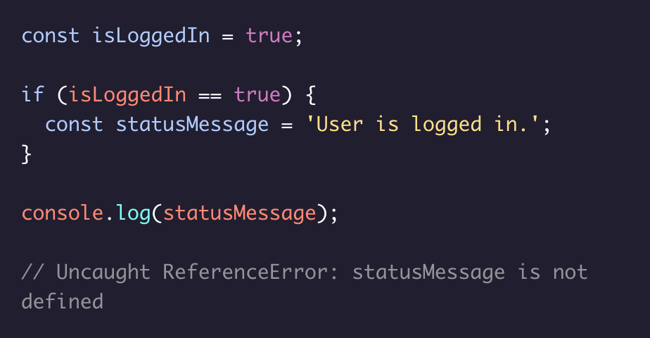
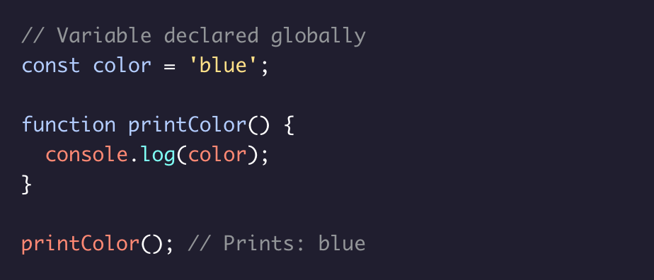

Scope
Scope is a concept that refers to where values and functions can be accessed. Various scopes include: * Global scope (a value/function in the global scope can be used anywhere in the entire program), * File or module scope (the value/function can only be accessed from within the file), * Function scope (only visible within the function), * Code block scope (only visible within a { ... } codeblock)
Block Scoped Variables
const and let are block scoped variables, meaning they are only accessible in their block or nested blocks. In the given code block, trying to print the statusMessage using the console.log() method will result in a ReferenceError. It is accessible only inside that if block.
Global Variables
JavaScript variables that are declared outside of blocks or functions can exist in the global scope, which means they are accessible throughout a program. Variables declared outside of smaller block or function scopes are accessible inside those smaller scopes. Note: It is best practice to keep global variables to a minimum.